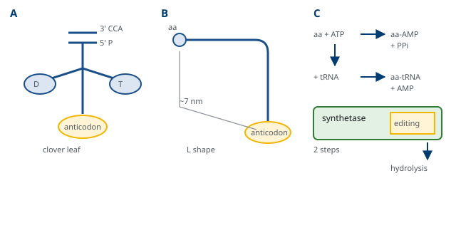
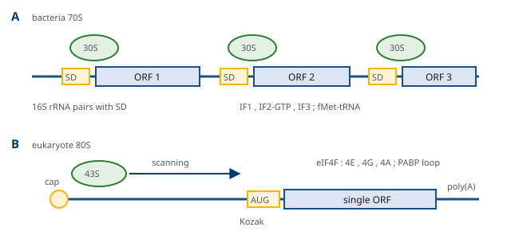
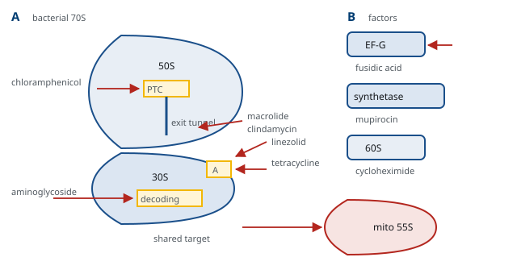

M01-W07-L03 · 인체일반생물학과 기초세포생물학
단백질 합성: ribosome과 번역의 단계
Protein Synthesis: the Ribosome and the Steps of Translation
학습목표
- 핵산 서열과 아미노산 사이에 화학적 대응이 없다는 문제를 진술하고 adaptor 가설이 그 문제를 어떻게 해결하는지 설명한다.
- 유전암호의 성질을 다섯 가지로 정리하고 읽기틀의 개념으로 frameshift 변이의 결과를 예측한다.
- tRNA의 구조를 2차·3차 수준에서 설명하고 aminoacyl-tRNA synthetase가 두 기질을 모두 확인하는 과정을 쓴다.
- Ribosome의 두 소단위와 세 결합 부위를 구분하고 peptidyl transferase 활성이 RNA에 있다는 근거를 든다.
- 원핵과 진핵의 번역 개시를 개시 codon 선택 방식으로 비교하고 각 체계의 개시 인자를 연결한다.
- 신장 주기의 세 단계를 GTP 가수분해의 위치와 함께 서술하고 정확도가 만들어지는 지점을 지적한다.
- 종결과 ribosome 재활용의 과정을 쓰고 비정상 전사체에 대한 품질 관리 경로를 구분한다.
- 번역 수준의 조절 기전을 네 가지 들고 각각이 어떤 상황에서 작동하는지 설명한다.
- 번역을 표적으로 하는 항생제를 작용 부위별로 분류하고 선택독성의 근거와 그 한계를 설명한다.
- 번역과 동시에 일어나는 과정을 열거하고 뒤의 수업에서 다룰 주제와 연결한다.
선수지식
- M01-W05-L03 유전정보의 흐름 — 중심원리, 유전암호표, 번역의 개요
- M01-W07-L01 RNA 합성과 가공 — mRNA의 cap과 poly(A), tRNA 가공과 CCA 부가, rRNA의 가공
- M01-W05-L02 생체분자와 막의 구조 — 아미노산과 peptide 결합, 단백질의 구조 수준
- M01-W04-L02 생체에너지: 자유에너지와 ATP — ATP·GTP 가수분해와 반응의 짝지음
강의 구성
- 1. 번역이 풀어야 하는 문제 — adaptor 가설
- 2. 유전암호와 읽기틀
- 3. tRNA와 아미노산의 적재
- 4. Ribosome의 구조와 기능 부위
- 5. 개시 — 읽기틀을 정하는 단계
- 6. 신장 — 세 단계의 반복
- 7. 종결과 ribosome의 재활용
- 8. 번역 수준의 조절
- 9. 번역을 표적으로 하는 약물
- 10. 번역과 동시에 일어나는 일
- 11. 연결
1. 번역이 풀어야 하는 문제 — adaptor 가설
복제와 전사는 같은 화학을 쓴다. 주형의 염기와 들어오는 염기가 수소결합으로 짝지으므로, 주형이 곧 선택 장치다. 번역에는 이 장치가 없다. mRNA의 codon과 아미노산 사이에는 수소결합도, 모양의 상보성도 없다. Leucine이 UUA에 더 잘 붙을 이유가 화학적으로 존재하지 않는다.
1955년 Francis Crick이 제안한 adaptor 가설이 이 문제를 해결한다. 핵산이 아미노산을 직접 읽을 수 없으므로, 한쪽 끝은 핵산처럼 읽히고 다른 쪽 끝에는 아미노산이 달린 중개 분자가 있어야 한다는 것이다. 그 중개 분자가 tRNA다.
이 가설에서 중요한 결론이 바로 따라 나온다. codon과 아미노산의 대응은 tRNA에 아미노산을 싣는 단계에서 정해진다. Ribosome은 tRNA의 anticodon이 codon과 맞는지만 확인하고, 그 tRNA에 실린 아미노산이 무엇인지는 확인하지 않는다. 이 사실은 실험으로 직접 확인되었다. Cysteine을 실은 tRNA^Cys^의 cysteine을 화학적으로 alanine으로 바꾼 뒤 번역에 넣으면, ribosome은 cysteine codon 자리에 alanine을 넣는다. 적재가 틀리면 번역은 그 오류를 바로잡지 못한다.
따라서 유전암호의 충실도는 두 지점에 걸려 있다.
- 적재의 정확도: aminoacyl-tRNA synthetase가 올바른 아미노산을 올바른 tRNA에 싣는가.
- 해독의 정확도: ribosome이 codon과 anticodon의 짝을 올바르게 가려내는가.
두 지점의 오류율은 각각 10⁻⁴~10⁻⁵ 수준으로 측정되었고, 복제의 10⁻⁹~10⁻¹⁰보다 훨씬 높다. 단백질 하나에 잘못된 아미노산이 하나 들어가도 그 분자 하나만 버리면 되지만, DNA의 오류는 모든 자손에게 전달되기 때문이다. 정확도의 요구 수준이 정보의 수명과 함께 정해진다는 원리가 여기에 있다.
2. 유전암호와 읽기틀
유전암호의 성질은 다섯 가지로 정리된다. M01-W05-L03에서 다룬 내용이지만, 번역 기구를 이해하는 데 그대로 쓰이므로 여기서 다시 확정한다.
- 삼염기 암호다. 세 염기가 하나의 아미노산을 지정하며, 4³ = 64개의 codon이 20종의 아미노산과 종결 신호를 나타낸다.
- 겹치지 않고 빈틈이 없다. 염기가 둘 이상의 codon에 동시에 쓰이지 않고 codon 사이에 구두점이 없다. 그래서 어디서 읽기 시작하는지가 전체를 정한다.
- 중복적(degenerate)이다. 61개의 codon이 20종을 지정하므로 한 아미노산에 여러 codon이 대응한다. 다만 모호하지는 않다. 한 codon이 두 아미노산을 지정하는 일은 없다.
- 거의 보편적이다. 세균에서 사람까지 같은 표를 쓴다. 예외는 미토콘드리아와 일부 원생생물에 있다.
- 방향이 정해져 있다. mRNA를 5′→3′로 읽고, 단백질은 N 말단에서 C 말단으로 자란다.
중복성의 배치에는 규칙이 있다. 같은 아미노산을 지정하는 codon은 대개 처음 두 염기가 같고 세 번째만 다르다. 또 화학적 성질이 비슷한 아미노산의 codon이 서로 가까이 놓여 있다. 두 성질이 합쳐지면 한 염기 치환이 아미노산을 바꾸지 않거나, 바꾸어도 비슷한 성질의 것으로 바꿀 확률이 높아진다. 유전암호의 배치 자체가 변이의 영향을 완충하는 장치로 해석되는 근거다.
읽기틀(reading frame)은 같은 서열에서 어디를 시작점으로 잡는지에 따라 생기는 세 가지 읽기 방식을 말한다. 읽기틀을 정하는 것은 개시 codon이고, 일단 정해지면 종결 codon까지 세 개씩 끊어 읽는다. 개시 codon에서 종결 codon까지의 구간을 open reading frame(ORF)이라 한다.
변이의 결과가 읽기틀로 갈린다.
| 변이 | 염기 수준의 변화 | 단백질 수준의 결과 |
|---|---|---|
| Silent | 치환, 같은 아미노산 | 변화 없음(단 splicing이나 번역 속도에 영향 가능) |
| Missense | 치환, 다른 아미노산 | 하나의 아미노산 교체 |
| Nonsense | 치환, 종결 codon 생성 | 절단된 단백질, 대개 전사체도 분해 |
| Frameshift | 3의 배수가 아닌 삽입·결실 | 그 지점부터 전혀 다른 서열, 곧 종결 codon |
| In-frame 삽입·결실 | 3의 배수 | 아미노산이 더해지거나 빠지되 뒤는 보존 |
이 표에서 가장 중요한 비교는 frameshift와 in-frame의 차이다. 세 염기의 결실은 아미노산 하나를 잃는 데 그치지만, 한 염기의 결실은 그 뒤 전체를 바꾼다. 같은 유전자에서 결실의 길이에 따라 중증도가 완전히 달라지는 질환이 이 원리로 설명되며, *DMD*에서 frameshift 결실은 Duchenne 근육병을, 읽기틀이 유지되는 결실은 훨씬 가벼운 Becker 근육병을 만든다.
3. tRNA와 아미노산의 적재
tRNA는 76~90 nucleotide의 작은 RNA다. 모든 tRNA가 같은 구조 원리를 공유한다.
2차 구조는 네 개의 사슬 내 염기쌍 구간이 만드는 clover leaf 모양이다. 아래쪽 고리의 가운데 세 nucleotide가 anticodon이고, 3′ 말단의 CCA에 아미노산이 붙는다. 그 밖에 D 고리와 TψC 고리가 있고, 두 고리의 이름은 그 안에 든 변형 염기(dihydrouridine, pseudouridine)에서 왔다.
3차 구조는 clover leaf가 접혀 만드는 L 모양이다. 이 접힘의 의미가 분명하다. anticodon과 아미노산 결합 자리가 분자의 양쪽 끝, 약 7 nm 떨어진 곳에 놓인다. 그래서 ribosome의 해독 중심(codon을 읽는 곳)과 peptidyl transferase 중심(peptide 결합을 만드는 곳)이 서로 떨어져 있어도 하나의 tRNA가 양쪽에 동시에 닿는다. tRNA의 모양이 ribosome의 구조를 제약한다.
적재를 수행하는 효소가 aminoacyl-tRNA synthetase다. 아미노산마다 하나씩 있어 사람의 세포질에 20종이 있다. 반응은 두 단계이고 ATP를 쓴다.
1. 활성화: 아미노산의 carboxyl기가 ATP의 α 인산을 공격해 aminoacyl-adenylate가 되고 pyrophosphate가 떨어진다. 고에너지 중간체가 만들어지는 단계다. 2. 전이: tRNA의 3′ 말단 adenosine의 hydroxyl기가 이 중간체를 공격해 aminoacyl-tRNA가 되고 AMP가 떨어진다.
생성된 ester 결합은 고에너지 결합이며, 이후 peptide 결합의 형성을 끌어가는 에너지가 여기에 저장된다. 번역에서 peptide 결합 자체를 만드는 데 ATP나 GTP가 따로 쓰이지 않는 이유가 이것이다. 에너지는 적재 단계에서 미리 지불된다.
효소는 두 기질을 모두 확인한다. 아미노산은 크기와 전하로 가려내고, tRNA는 anticodon과 그 밖의 식별 염기로 가려낸다. 그러나 비슷한 아미노산은 크기만으로 구별되지 않는다. Isoleucine용 효소는 한 개의 methyl기만 적은 valine을 약 1/200의 비율로 잘못 활성화한다. 그래서 일부 synthetase는 편집 부위(editing site)를 따로 가진다. 올바른 아미노산은 들어갈 수 없고 잘못된 아미노산만 들어갈 수 있는 크기의 주머니에서 ester 결합을 가수분해해 버린다. 이 이중 검문으로 적재 오류율이 10⁻⁴ 아래로 내려간다. "들어오는 것을 고르는" 선별과 "들어온 것을 버리는" 교정을 함께 쓰는 설계는 복제의 proofreading과 같은 전략이다.

적재된 tRNA의 anticodon이 codon을 읽는 방식에도 규칙이 있다. 사람의 세포질에는 61종의 codon에 대응하는 61종의 tRNA가 있는 것이 아니라 그보다 적은 종류가 있고, 하나의 tRNA가 여러 codon을 읽는다. 이것이 wobble이다. Codon의 세 번째 자리는 anticodon의 첫 번째 자리와 짝지으며, 이 자리에서는 표준 염기쌍이 아닌 짝짓기가 허용된다. 특히 변형 염기 inosine은 U, C, A와 모두 짝지을 수 있어 하나의 tRNA가 세 codon을 읽게 한다. 중복성이 codon의 세 번째 자리에 집중되어 있는 것과 wobble이 그 자리에서 일어나는 것은 같은 사실의 양면이다.
4. Ribosome의 구조와 기능 부위
Ribosome은 RNA와 단백질로 이루어진 거대 복합체이고, 큰 소단위와 작은 소단위가 합쳐져 작동한다. 구성은 생물에 따라 다르지만 배치는 공통이다.
| 구분 | 세균(70S) | 진핵 세포질(80S) | 사람 미토콘드리아(55S) |
|---|---|---|---|
| 작은 소단위 | 30S: 16S rRNA + 21 단백질 | 40S: 18S rRNA + 33 단백질 | 28S |
| 큰 소단위 | 50S: 23S·5S rRNA + 31 단백질 | 60S: 28S·5.8S·5S rRNA + 47 단백질 | 39S |
| 전체 | 70S | 80S | 55S |
두 소단위의 분업이 분명하다. 작은 소단위는 mRNA를 붙잡고 codon-anticodon 짝을 확인한다. 이 자리를 해독 중심(decoding center)이라 한다. 큰 소단위는 peptide 결합을 만들고 새로 생긴 사슬을 내보낸다. 이 자리가 peptidyl transferase 중심이고, 거기서 이어지는 통로가 exit tunnel이다.
tRNA가 앉는 자리는 세 개이며, 두 소단위에 걸쳐 있다.
- A 자리(aminoacyl): 새로 들어온 aminoacyl-tRNA가 앉는다.
- P 자리(peptidyl): 지금까지 만든 사슬을 달고 있는 tRNA가 앉는다.
- E 자리(exit): 아미노산을 넘겨준 빈 tRNA가 떠나기 전에 거치는 자리다.
Peptidyl transferase 활성은 단백질이 아니라 rRNA에 있다. 근거가 세 가지다. 첫째, 50S 소단위에서 단백질을 거의 모두 제거해도 peptide 결합 형성 활성이 남는다. 둘째, 원자 수준의 구조에서 peptidyl transferase 중심의 반경 약 18 Å 안에 단백질의 원자가 하나도 없고 23S rRNA만 있다. 셋째, 이 자리에 작용하는 항생제가 rRNA의 염기와 접촉하며, 내성 변이가 단백질이 아니라 rRNA에서 생긴다. 즉 ribosome은 ribozyme이고, RNA가 촉매였던 시기의 핵심 장치가 그대로 남아 있는 것으로 해석된다.
Ribosome의 작동 원리를 하나로 요약하면 구조 변화를 반복하는 기계다. 해독 중심에서 올바른 짝이 확인되면 작은 소단위가 조여지고, 그 변화가 큰 소단위로 전달되어 다음 단계가 허가된다. 소단위 사이의 회전 운동이 tRNA를 A에서 P로, P에서 E로 옮긴다. 정확도와 방향성이 모두 이 구조 변화의 순서에서 나온다.
5. 개시 — 읽기틀을 정하는 단계
번역의 세 단계 가운데 개시가 가장 복잡하고 가장 많이 조절된다. 이유는 분명하다. 개시가 읽기틀을 정하므로, 여기서 틀리면 뒤의 모든 단계가 무의미해진다. 또 개시는 속도를 정하는 단계이기도 해서, 조절의 지점이 여기에 집중된다.
세균의 개시는 서열을 직접 읽는 방식이다.
1. mRNA의 개시 codon 상류 약 8~13 nucleotide에 Shine–Dalgarno 서열(AGGAGG에 가까운 서열)이 있고, 16S rRNA의 3′ 말단이 이 서열과 염기쌍으로 짝짓는다. 이 짝짓기가 30S 소단위를 개시 codon 위에 바로 올려놓는다. 2. 개시 tRNA는 formyl기가 붙은 methionine(fMet)을 싣는다. 이 tRNA만 P 자리에 직접 들어갈 수 있다. 3. 개시 인자는 셋이다. IF3은 두 소단위가 미리 결합하는 것을 막고, IF2는 GTP와 함께 개시 tRNA를 데려오고, IF1은 A 자리를 막아 개시 tRNA가 P 자리로 가게 한다. 4. 올바른 짝이 맞으면 IF2에 결합한 GTP가 가수분해되고 인자들이 떨어지며 50S가 결합해 70S 개시 복합체가 된다.
이 방식의 결과가 중요하다. Shine–Dalgarno 서열은 전사체의 내부에도 있을 수 있으므로, 하나의 mRNA에서 여러 단백질이 각각 독립적으로 개시될 수 있다. 세균의 operon이 하나의 전사체에서 여러 단백질을 만드는 polycistronic 구조를 가질 수 있는 분자적 근거가 이것이다.
진핵세포의 개시는 서열이 아니라 말단에서 출발해 찾아가는 방식이다.
1. eIF4F 복합체가 5′ cap을 인식한다. 구성은 cap을 직접 붙잡는 eIF4E, 발판 역할의 eIF4G, RNA의 이차 구조를 푸는 helicase eIF4A다. Poly(A) 꼬리에 붙은 PABP가 eIF4G와 결합해 전사체가 고리를 이루므로, cap과 poly(A)가 모두 있어야 개시 효율이 높아진다. 2. 작은 소단위에 eIF2·GTP·Met-tRNAᵢ와 여러 인자가 실린 43S 복합체가 5′ 말단에 올라탄다. 3. 복합체가 5′→3′ 방향으로 전사체를 훑어 내려가며 개시 codon을 찾는다. 이것이 scanning이다. 4. AUG를 만나면 개시 tRNA의 anticodon과 짝지어지고, eIF2의 GTP가 가수분해되며 멈춘다. eIF5B의 작용으로 60S가 결합해 80S 개시 복합체가 완성된다.
어느 AUG에서 멈추는지는 주변 서열이 정한다. 가장 효율이 높은 맥락이 Kozak 서열(gccRccAUGG, 특히 −3 위치의 purine과 +4 위치의 G)이다. 맥락이 약한 AUG는 지나칠 수 있고, 이 leaky scanning 때문에 하나의 전사체에서 서로 다른 N 말단을 가진 두 단백질이 나오기도 한다.
진핵 개시의 성질에서 두 가지 결론이 따라 나온다. 첫째, 진핵 mRNA는 대개 하나의 단백질만 만든다. 개시가 5′ 말단에서만 시작하므로 내부의 ORF는 보통 쓰이지 않는다. 둘째, 그래서 예외가 특별한 의미를 가진다. 일부 바이러스 RNA와 소수의 세포 전사체는 cap 없이도 ribosome을 직접 끌어들이는 internal ribosome entry site(IRES)를 가지며, cap 의존 개시가 억제된 조건(세포자멸, 저산소, 바이러스 감염)에서도 번역된다. Picornavirus가 eIF4G를 잘라 숙주의 cap 의존 번역을 끄면서 자기 IRES로는 계속 번역하는 것이 이 전략의 전형이다.

6. 신장 — 세 단계의 반복
신장은 아미노산 하나를 더하는 세 단계가 반복되는 주기다. 포유류 세포에서 초당 2~6개, 세균에서 초당 15~20개의 아미노산이 더해진다.
1단계: 해독(decoding). Aminoacyl-tRNA가 EF-Tu(진핵의 eEF1A)에 실려 A 자리로 들어온다. Anticodon이 codon과 짝지어 세 염기쌍이 모두 맞으면 작은 소단위의 16S rRNA에 있는 두 개의 adenine이 염기쌍의 작은 홈을 직접 확인하고, 그 결과 소단위가 조여지는 구조 변화가 일어난다. 이 변화가 EF-Tu의 GTP 가수분해를 촉진하고, EF-Tu는 GDP 상태가 되어 tRNA를 놓고 떨어진다.
2단계: peptide 결합 형성. P 자리 tRNA에 달린 사슬의 carbonyl 탄소가 A 자리 tRNA에 달린 아미노산의 amino기에 의해 공격받는다. 사슬이 A 자리 tRNA로 넘겨진다. 23S rRNA는 기질을 올바른 방향으로 잡아 주고 물을 배제하는 방식으로 이 반응을 가속한다. 앞에서 보았듯 결합에 필요한 에너지는 aminoacyl-tRNA의 ester 결합에 이미 저장되어 있다.
3단계: 자리이동(translocation). EF-G(진핵의 eEF2)가 GTP와 함께 결합해 가수분해하며, ribosome이 mRNA를 정확히 세 nucleotide 전진시킨다. 사슬을 달게 된 tRNA가 A에서 P로, 빈 tRNA가 P에서 E로 옮겨 가고 A 자리가 비어 다음 주기가 시작된다.
정확도는 2단계가 아니라 1단계에서 만들어진다. 틀린 tRNA도 A 자리에 들어올 수는 있지만, 세 염기쌍이 맞지 않으면 구조 변화가 일어나지 않아 GTP 가수분해가 느려지고 그 사이에 tRNA가 떨어져 나간다. 초기 선택에서 걸러지지 않은 것은 GTP 가수분해 뒤에도 peptide 결합이 만들어지기 전에 한 번 더 걸러진다(proofreading). 두 번의 걸러내기가 모두 "시간"을 이용한다는 점이 요점이다. 올바른 짝에서는 다음 단계가 빠르고, 틀린 짝에서는 떨어져 나가는 쪽이 빠르다.
에너지 수지를 정리해 둔다. 아미노산 하나를 사슬에 더하는 데 고에너지 인산결합 네 개가 소모된다. 적재에서 ATP 하나가 AMP와 pyrophosphate로 쪼개지므로 둘, 해독에서 GTP 하나, 자리이동에서 GTP 하나다. 단백질 합성이 세포에서 가장 많은 에너지를 쓰는 과정 가운데 하나인 이유가 이 수지에 있고, 영양이 부족할 때 번역이 가장 먼저 억제되는 이유도 같다.
신장 속도는 균일하지 않다. 희귀 codon이 모인 구간, 양전하가 몰린 서열, exit tunnel과 상호작용하는 서열에서 ribosome이 느려진다. 이 번역 속도의 불균일성은 결함이 아니라 쓰임이 있다. 느려진 구간에서 새로 나온 사슬이 접힐 시간을 벌고, 신호서열이 SRP에 인식될 시간을 만들며, 일부 단백질에서는 특정 도메인이 먼저 접히도록 순서를 정한다. 사람 유전자에서 synonymous 치환이 표현형을 바꾸는 사례의 상당수가 이 속도 변화로 설명된다.
7. 종결과 ribosome의 재활용
A 자리에 종결 codon(UAA, UAG, UGA)이 오면 그에 맞는 tRNA가 없다. 대신 release factor가 들어온다.
세균에서는 RF1이 UAA와 UAG를, RF2가 UAA와 UGA를 인식하고, RF3가 GTP를 써서 이들을 떼어낸다. 진핵세포에서는 eRF1 하나가 세 종결 codon을 모두 인식하고 eRF3가 GTPase로 작동한다. Release factor는 구조가 tRNA를 닮아 A 자리에 들어가지만, 아미노산 대신 물 분자를 peptidyl transferase 중심으로 안내한다. 그 결과 사슬과 tRNA 사이의 ester 결합이 가수분해되어 완성된 단백질이 방출된다.
종결 뒤에 ribosome은 분해되지 않고 재활용된다. 진핵세포에서는 ABCE1이 ATP를 써서 두 소단위를 분리하고, 남은 tRNA와 mRNA가 떨어져 나가며 소단위가 다음 개시에 다시 쓰인다. 세균에서는 ribosome recycling factor와 EF-G가 같은 일을 한다. 개시, 신장, 종결에 이어 재활용을 네 번째 단계로 세는 것이 현재의 표준적 서술이다.
종결은 완벽하지 않다. 종결 codon을 아미노산으로 읽고 지나가는 readthrough가 낮은 빈도로 일어나며, 주변 서열에 따라 빈도가 달라진다. 이 현상에는 세 가지 쓰임과 결과가 있다. 첫째, selenocysteine은 특수한 구조와 인자를 써서 UGA를 아미노산으로 읽는 방식으로 삽입된다. 즉 UGA가 언제나 종결은 아니다. 둘째, 일부 바이러스가 readthrough로 하나의 ORF에서 두 단백질을 만든다. 셋째, 치료 응용이다. 조기 종결 codon을 읽어 넘기게 하는 약물이 개발되었고(ataluren 등), 효과는 변이의 종류와 주변 서열에 따라 크게 다르다.
비정상적인 전사체를 처리하는 품질 관리 경로도 번역과 묶여 있다. 세 경로를 구별한다.
| 경로 | 인식하는 이상 | 결과 |
|---|---|---|
| Nonsense-mediated decay(NMD) | 마지막 exon 경계보다 상류의 종결 codon | 전사체 분해 |
| Non-stop decay(NSD) | 종결 codon이 없어 poly(A)까지 번역 | 전사체와 산물 모두 분해 |
| No-go decay(NGD) | ribosome이 구조에 걸려 멈춤 | 전사체 절단, 산물 분해 |
세 경로의 공통 원리는 이상을 감지하는 수단이 ribosome 자신이라는 점이다. 전사체의 서열을 미리 검사하는 장치는 없고, ribosome이 번역을 시도하다가 멈추거나 비정상적으로 끝나는 사건 자체가 신호가 된다. 멈춘 ribosome에서 미완성 사슬에 ubiquitin을 붙여 분해로 보내는 ribosome-associated quality control이 함께 작동하며, 이 체계의 고장은 신경 퇴행과 연결된다.
8. 번역 수준의 조절
전사 조절이 "만들 것인가"를 정한다면, 번역 조절은 "이미 있는 전사체를 쓸 것인가"를 정한다. 두 조절의 성질이 다르다. 전사 조절은 핵에서 일어나 전사체가 만들어지고 가공되어 나오기까지 시간이 걸리지만, 번역 조절은 이미 세포질에 있는 전사체를 대상으로 하므로 수 분 안에 작동한다. 그래서 급한 반응과 전사가 불가능한 상황(난자의 성숙, 신경 말단, 적혈구)에서는 번역 조절이 주된 수단이 된다.
네 가지 기전을 구분한다.
1. 개시 인자의 인산화 — eIF2α와 통합 스트레스 반응. eIF2는 GTP를 쥐고 개시 tRNA를 데려오는 인자이며, GDP 상태가 된 뒤 eIF2B가 GTP로 교환해 주어야 다시 쓰인다. eIF2의 α 소단위가 인산화되면 eIF2B를 붙잡고 놓아주지 않는 억제자로 바뀐다. eIF2B의 양이 eIF2보다 적으므로, 일부만 인산화되어도 전체 개시가 크게 줄어든다. 네 종의 kinase가 서로 다른 스트레스를 이 하나의 지점으로 모은다.
| Kinase | 감지하는 상태 |
|---|---|
| PERK | 소포체의 접히지 않은 단백질 축적 |
| GCN2 | 아미노산 결핍(실리지 않은 tRNA의 증가) |
| PKR | 이중사슬 RNA, 즉 바이러스 감염 |
| HRI | heme 결핍 |
이 공통 지점을 통합 스트레스 반응(integrated stress response)이라 한다. 전체 번역이 줄어드는 동안, uORF를 가진 일부 전사체는 오히려 번역이 늘어난다. 개시가 드물어지면 상류의 짧은 ORF를 지나쳐 본래 ORF에서 개시할 확률이 높아지기 때문이다. ATF4가 그 대표이며, 스트레스 대응 유전자를 켠다. 전체를 줄이는 신호가 특정 전사체를 선택적으로 올린다는 점이 이 체계의 핵심 설계다.
2. 전달 경로를 통한 개시 능력의 조절 — mTORC1. 영양과 성장 신호를 받는 mTORC1은 두 방향으로 번역을 올린다. 하나는 eIF4E를 붙잡아 eIF4F 조립을 막던 4E-BP를 인산화해 떼어내는 것이고, 다른 하나는 S6 kinase를 활성화하는 것이다. 그 결과 cap 의존 개시가 올라가고, 특히 5′ UTR에 구조가 많은 전사체와 ribosome 구성 요소의 전사체가 선택적으로 번역된다. Rapamycin 계열 약물이 세포 성장을 억제하는 기전의 중심이 여기에 있다.
3. 전사체 특이 결합 단백질. 특정 전사체의 UTR에 단백질이 붙어 그 전사체만 조절한다. Ferritin의 5′ UTR에 있는 iron-response element에 IRP가 붙으면 개시 복합체가 지나갈 수 없어 번역이 막히고, 철이 충분하면 IRP가 떨어져 번역이 시작된다. 같은 IRP가 transferrin receptor 전사체에서는 3′ UTR에 붙어 분해를 막는다. 하나의 결합 단백질이 붙는 위치에 따라 번역 억제와 안정화라는 다른 결과를 내는 것이며, 두 단백질의 양이 철 상태에 맞추어 반대 방향으로 움직이는 이유가 이 배치에 있다.
4. 작은 RNA에 의한 조절. miRNA가 Argonaute와 함께 표적 전사체의 3′ UTR에 부분적으로 짝지으면 번역이 억제되고 deadenylation이 촉진된다. 한 miRNA가 수백 개의 전사체를 조절하므로, 이 층은 개별 유전자의 미세 조정과 세포 상태의 전반적 기울기를 함께 만든다.
여기에 국소 번역을 덧붙여 둔다. 전사체가 특정 위치로 운반되어 거기서만 번역되는 방식이다. 신경세포의 수상돌기에서 자극에 반응해 국소적으로 단백질이 만들어지는 것이 시냅스 가소성의 기반으로 여겨지며, *FMR1*의 산물 FMRP가 이 국소 번역을 억제하는 단백질이다. Fragile X 증후군에서 FMRP가 없어지면 시냅스에서 번역이 과도해진다는 모형이 제시되어 있다.
9. 번역을 표적으로 하는 약물
번역 기구는 항생제의 가장 큰 표적이다. 세균과 사람의 ribosome이 구조와 인자에서 충분히 다르기 때문이다. 약물을 어느 소단위의 어느 자리에 작용하는가로 정리하면 작용과 부작용이 함께 설명된다.
| 약물 | 표적 | 작용 |
|---|---|---|
| Aminoglycoside(gentamicin, streptomycin) | 30S, 해독 중심 | 해독의 정확도를 떨어뜨리고 자리이동을 방해한다 |
| Tetracycline, doxycycline | 30S, A 자리 | aminoacyl-tRNA가 A 자리에 앉지 못하게 한다 |
| Chloramphenicol | 50S, peptidyl transferase 중심 | peptide 결합 형성을 막는다 |
| Macrolide(erythromycin), clindamycin | 50S, exit tunnel 입구 | 새로 생긴 사슬이 나가는 통로를 막는다 |
| Linezolid | 50S, A 자리 쪽 | 개시 복합체 형성을 막는다 |
| Fusidic acid | EF-G | 자리이동 뒤 EF-G가 떨어지지 못하게 한다 |
| Mupirocin | isoleucyl-tRNA synthetase | 적재를 막는다 |
| Cycloheximide | 60S(진핵) | 진핵 자리이동을 막는다. 연구용 시약 |
사람 쪽을 표적으로 하는 독소도 같은 틀로 이해된다. Diphtheria toxin은 eEF2의 특정 잔기에 ADP-ribose를 붙여 자리이동을 영구히 막고, ricin은 28S rRNA의 한 adenine을 떼어 큰 소단위를 불활성화한다. 두 독소 모두 촉매 작용이므로 분자 몇 개로 세포 하나를 죽일 수 있다.
내성의 기전도 표적에서 바로 따라 나온다. rRNA의 표적 염기를 methylation하는 효소(erm 유전자군)가 macrolide·clindamycin·linezolid에 교차 내성을 만들고, 약물을 변형하는 효소가 aminoglycoside 내성을 만들며, 유출 펌프와 23S rRNA의 점 변이가 함께 보고된다. 같은 자리에 붙는 약끼리 교차 내성이 생긴다는 점에서, 표적 부위의 지도가 곧 내성의 지도가 된다.
10. 번역과 동시에 일어나는 일
새로 만들어지는 사슬은 ribosome에서 완전히 나온 뒤에 처리되는 것이 아니다. 여러 과정이 번역과 동시에 진행된다. 이 절은 각 과정의 상세가 어느 수업에 있는지를 함께 표시해 다리를 놓는다.
- 접힘. Exit tunnel은 약 100 Å 길이에 30~40개의 아미노산을 담으므로, 그 안에서는 2차 구조 정도만 형성된다. 터널을 나오는 동안 chaperone(세균의 trigger factor, 진핵의 Hsp70 계열)이 붙어 성숙한 구조로 접힐 때까지 응집을 막는다. 상세는 M01-W08-L01에 있다.
- N 말단의 처리. 세균에서는 fMet의 formyl기가 떼어지고 흔히 methionine까지 제거된다. 진핵에서도 N 말단 methionine이 자주 제거되고, acetylation이 붙는다. 어떤 잔기가 N 말단에 남는지가 단백질의 수명을 정하는 규칙(N-end rule)과 연결된다.
- 막으로의 표적화. 사슬의 N 말단에 신호서열이 있으면 SRP가 이를 인식해 번역을 일시적으로 늦추고 복합체 전체를 소포체 막으로 데려간다. 번역이 소포체 막 위에서 이어지며 사슬이 그대로 막을 통과한다. 상세는 M01-W09-L01에 있다.
- 당 사슬의 부가. 소포체 내강으로 들어간 사슬에는 번역이 끝나기 전에 N-연결 당 사슬이 붙는다. 상세는 M01-W08-L01과 M01-W09-L01에 있다.
- 품질 관리. 접히지 않은 사슬과 멈춘 ribosome이 ubiquitin 표지를 받아 분해로 보내진다. 상세는 M01-W08-L01에 있다.
하나의 전사체에 여러 ribosome이 동시에 올라가 polysome을 이루는 것도 여기서 확인해 둔다. 평균적으로 80~100 nucleotide마다 하나씩 올라가므로, 긴 전사체에서는 수십 개의 ribosome이 같은 전사체를 따라간다. 이 배치의 결과가 두 가지다. 전사체 하나에서 동시에 여러 분자가 만들어지므로 번역량이 전사체 수에 비례하지 않고 개시 빈도에 비례한다. 그리고 앞선 ribosome이 멈추면 뒤의 ribosome이 밀려 충돌하는데, 이 충돌 자체가 앞 절에서 다룬 품질 관리의 신호로 쓰인다.

11. 연결
번역은 유전정보의 흐름에서 마지막 단계이면서, 단백질의 일생이 시작되는 지점이다.
- M01-W05-L03 유전정보의 흐름 — 번역이 전체 흐름의 어디에 놓이는지, 그리고 조절 지점의 지도를 확인한다.
- M01-W07-L01 RNA 합성과 가공 — 이 수업에서 쓰인 mRNA의 cap과 poly(A), tRNA의 CCA와 변형 염기, rRNA의 가공이 어떻게 만들어지는지를 다룬다.
- M01-W07-L02 전사 조절과 후성유전 — 전사 수준의 조절과 이 수업의 번역 수준 조절이 어떻게 다른 시간 규모에서 작동하는지를 비교한다.
- M01-W08-L01 번역 후 가공·접힘·분해 — exit tunnel을 나온 사슬의 접힘, chaperone, 변형, ubiquitin-proteasome 분해를 상세히 다룬다. 단백질의 수명이 발현량에 들어가는 방식이 거기서 정리된다.
- M01-W08-L02 유전체·단백체 — 전사체 양과 단백질 양이 비례하지 않는다는 관찰을, 이 수업에서 다룬 개시 효율과 반감기로 설명한다.
- M01-W09-L01 단백질 표적화와 소포 수송 — SRP와 신호서열, 소포체로의 공동 번역 수송을 상세히 다룬다.
- M01-W11-L02 세포 신호전달 — mTORC1과 통합 스트레스 반응이 신호 경로의 전체 그림에서 어디에 놓이는지를 다룬다.
- M02-W01-L02 유전 질환의 분자 기전 — 개시 codon 변이, uORF 생성, nonsense 변이와 readthrough 치료를 임상 유전학의 분류 안에서 정리한다.
- M03-W02-L02 에너지대사와 미토콘드리아 질환 — 미토콘드리아의 번역 기구와 그 결함이 만드는 질환, 그리고 항생제 독성의 접점을 다룬다.
확인 문항
Cysteine을 실은 tRNA의 cysteine을 화학적으로 alanine으로 바꾸어 번역계에 넣으면 cysteine codon 자리에 alanine이 들어간다. 이 실험이 유전암호의 어느 성질을 증명하는지 설명하고, 그 성질이 번역의 정확도에 대해 뜻하는 바를 쓰라.
해설
이 실험은 codon과 아미노산의 대응이 ribosome에서 정해지지 않고 tRNA에 아미노산을 싣는 단계에서 정해진다는 것을 증명한다. Ribosome은 A 자리에 들어온 tRNA의 anticodon이 codon과 짝지어지는지만 확인하고, 그 tRNA에 실려 있는 아미노산이 무엇인지는 확인하지 않는다. 따라서 tRNA가 올바른 anticodon을 가지고 있으면 어떤 아미노산을 달고 있어도 그 자리에 들어간다. 정확도에 대해 뜻하는 바는 두 가지다. 첫째, 번역의 충실도는 aminoacyl-tRNA synthetase의 특이성에 결정적으로 의존하며, 적재 단계의 오류는 이후에 교정되지 않는다. 그래서 일부 synthetase가 편집 부위를 따로 가져 잘못 실린 아미노산을 가수분해한다. 둘째, 유전암호의 대응은 화학적 필연이 아니라 효소가 만든 규약이므로, 인공적으로 바꿀 수 있다. 비천연 아미노산을 특정 codon에 넣는 유전암호 확장 기술이 성립하는 근거가 이것이다.
어떤 환자의 유전자에서 개시 codon의 첫 염기가 치환된 변이(c.1A>G)가 발견되었다. 단백질 수준에서 일어날 수 있는 결과를 가능한 경우로 나누어 설명하라.
해설
개시 codon이 없어지므로 scanning하던 개시 복합체가 그 자리에서 멈추지 않고 하류로 계속 내려가 다음 AUG에서 멈춘다. 결과는 그 다음 AUG의 위치와 읽기틀에 따라 갈린다. 첫째, 다음 AUG가 같은 읽기틀의 하류에 있으면 N 말단이 잘린 단백질이 만들어진다. 잘린 부분에 신호서열이나 필수 도메인이 있었다면 기능을 잃고, 없었다면 부분적으로 기능할 수 있다. 둘째, 다음 AUG가 다른 읽기틀에 있으면 전혀 다른 서열이 짧게 만들어지고 곧 종결되므로 단백질이 사실상 만들어지지 않는다. 셋째, 원래 개시 codon 주변의 맥락이 강하고 대체 AUG의 맥락이 약하면 전체 번역량 자체가 크게 줄어든다. 유전자에 따라 세 경우의 표현형이 완전 상실에서 경증까지 걸쳐 나타난다. 확인에는 환자 세포에서 단백질의 양과 크기를 Western blot으로 보는 것이 직접적이며, 서열 분석만으로는 어느 경우인지 확정할 수 없다.
아미노산 하나가 사슬에 더해질 때 소모되는 고에너지 인산결합의 수를 각 단계로 나누어 세고, peptide 결합 형성 자체에 ATP나 GTP가 쓰이지 않는 이유를 설명하라.
해설
모두 네 개다. 적재 단계에서 ATP 하나가 AMP와 pyrophosphate로 쪼개지므로 고에너지 결합 두 개가 소모된다. 해독 단계에서 EF-Tu(eEF1A)에 결합한 GTP 하나가 가수분해된다. 자리이동 단계에서 EF-G(eEF2)에 결합한 GTP 하나가 가수분해된다. Peptide 결합 형성 자체에 별도의 에너지원이 쓰이지 않는 이유는 그 에너지가 이미 aminoacyl-tRNA에 저장되어 있기 때문이다. 적재 반응에서 아미노산의 carboxyl기와 tRNA의 3′ hydroxyl기 사이에 만들어진 ester 결합은 고에너지 결합이며, peptide 결합이 형성될 때 이 결합이 끊어지면서 반응이 자발적으로 진행된다. 즉 에너지는 합성 시점이 아니라 기질을 준비하는 시점에 미리 지불된다. 두 GTP는 결합의 형성이 아니라 정확도와 방향성을 사는 데 쓰인다. 해독의 GTP는 올바른 짝만 다음 단계로 보내는 선별에, 자리이동의 GTP는 ribosome이 정확히 세 nucleotide만 한 방향으로 전진하게 하는 데 쓰인다.
신장 단계에서 잘못된 tRNA가 걸러지는 과정을 두 지점으로 나누어 설명하고, 두 지점이 공통으로 이용하는 물리적 원리를 쓰라.
해설
첫 번째 지점은 초기 선택이다. Aminoacyl-tRNA가 EF-Tu에 실려 A 자리에 들어오면 anticodon과 codon이 짝지어지는데, 세 염기쌍이 모두 맞을 때만 작은 소단위의 16S rRNA가 염기쌍을 직접 확인하며 소단위가 조여지는 구조 변화가 일어난다. 이 변화가 EF-Tu의 GTP 가수분해를 촉진한다. 짝이 맞지 않으면 구조 변화가 일어나지 않아 가수분해가 느려지고, 그 사이에 tRNA가 떨어져 나간다. 두 번째 지점은 GTP가 가수분해된 뒤에도 peptide 결합이 만들어지기 전에 작동하는 교정이다. 틀린 짝은 결합이 약하므로 peptide 결합 형성보다 해리가 먼저 일어난다. 두 지점이 공통으로 이용하는 원리는 반응 속도의 차이다. 결합의 세기 차이를 직접 측정하는 장치가 있는 것이 아니라, 올바른 짝에서는 다음 단계로 가는 속도가 빠르고 틀린 짝에서는 떨어져 나가는 속도가 빠르도록 설계되어 있다. 두 단계를 곱해 오류율이 10⁻⁴ 수준으로 내려간다. 이 전략은 복제에서 염기 선택과 proofreading을 곱하는 방식과 같다.
세균의 하나의 mRNA에서 여러 단백질이 각각 독립적으로 만들어질 수 있는데 진핵세포에서는 대개 그렇지 않다. 두 체계의 개시 방식으로 이 차이를 설명하라.
해설
세균의 개시는 서열을 직접 인식하는 방식이다. 16S rRNA의 3′ 말단이 mRNA의 Shine–Dalgarno 서열과 염기쌍으로 짝지어 30S 소단위를 개시 codon 위에 바로 올려놓는다. 이 서열은 전사체의 5′ 말단에만 있을 이유가 없으므로 내부에도 존재할 수 있고, 각 Shine–Dalgarno 서열마다 독립적으로 개시가 일어난다. 그래서 세균은 기능적으로 연관된 유전자를 하나의 전사체에 묶은 polycistronic operon 구조를 쓸 수 있다. 진핵세포의 개시는 5′ cap을 eIF4F가 인식하고 거기서 출발해 3′ 방향으로 훑어 내려가며 첫 적절한 AUG를 찾는 scanning 방식이다. 개시의 출발점이 전사체의 말단 하나로 고정되어 있으므로 내부의 ORF는 보통 쓰이지 않고, 전사체 하나가 대개 단백질 하나를 만든다. 예외는 cap 없이 ribosome을 직접 끌어들이는 IRES를 가진 전사체이며, 일부 바이러스와 소수의 세포 전사체에서 관찰된다.
어떤 환자가 gentamicin을 한 번 투여받은 뒤 비가역적인 양측 감각신경성 난청이 생겼고, 가족 가운데 같은 병력을 가진 사람이 어머니 쪽에 여러 명 있었다. 기전과 예방 방법을 설명하라.
해설
미토콘드리아 12S rRNA의 변이(대표적으로 m.1555A>G)가 원인이다. Aminoglycoside는 세균의 30S 소단위에 작용하는데, 사람 미토콘드리아의 ribosome은 세균 ribosome과 기원이 같아 구조가 비슷하므로 원래도 약한 결합이 가능하다. 12S rRNA에 이 변이가 있으면 약물 결합 부위가 세균 쪽 구조에 더 가까워져 친화도가 크게 올라가고, 치료 용량에서도 미토콘드리아 번역이 억제된다. 그 결과 에너지 요구가 크고 재생되지 않는 내이의 유모세포가 먼저 손상되어 난청이 비가역적으로 남는다. 가족력이 어머니 쪽에 모여 있는 것은 mtDNA가 모계로만 전달되기 때문이다. 예방은 두 가지다. 가족력이 있으면 투여 전에 해당 변이를 검사하고, 변이가 확인되면 aminoglycoside를 피하고 다른 계열의 항생제를 쓴다. 혈중 농도 감시는 이 부류의 독성을 예방하지 못한다는 점이 중요하다. 용량 의존적 독성이 아니라 결합 친화도의 변화에서 오는 것이므로, 정상 용량에서도 일어난다.
아미노산이 결핍된 세포에서 전체 단백질 합성은 줄어드는데 ATF4 단백질은 오히려 늘어난다. 이 두 결과가 하나의 기전에서 나오는 과정을 설명하라.
해설
아미노산이 부족하면 아미노산을 싣지 못한 tRNA가 늘어나고, 이를 감지하는 kinase GCN2가 eIF2의 α 소단위를 인산화한다. 인산화된 eIF2α는 GDP를 GTP로 교환해 주는 eIF2B를 붙잡아 억제하므로, 개시 복합체가 만들어지는 속도가 떨어지고 전체 번역이 줄어든다. ATF4가 늘어나는 것은 그 전사체의 구조 때문이다. ATF4 전사체의 5′ 쪽에는 상류 ORF가 있고, 개시가 활발할 때는 ribosome이 이 상류 ORF를 번역한 뒤 본래 ORF를 지나쳐 버려 ATF4가 거의 만들어지지 않는다. 개시가 드물어지면 상류 ORF에서 개시하지 못하고 지나칠 확률이 높아져, 재개시가 본래 ORF에서 일어나 ATF4가 만들어진다. 즉 개시 효율이 낮아지는 것 자체가 이 전사체에서는 번역을 올리는 조건이 된다. 늘어난 ATF4는 아미노산 합성과 수송, 스트레스 대응 유전자를 켠다. 전체를 줄이는 신호가 특정 전사체를 선택적으로 올리는 이 설계가 통합 스트레스 반응의 핵심이다.
어떤 유전자의 exon 하나가 결실되었는데 환자의 표현형이 예상보다 가벼웠다. 읽기틀의 관점에서 가능한 설명과, 이 원리를 치료에 이용하는 방법을 쓰라.
해설
결실된 exon의 길이가 3의 배수여서 읽기틀이 유지되었을 가능성이 높다. 그러면 결실 구간에 해당하는 아미노산만 빠진 단백질이 만들어지고, 그 구간이 기능에 필수적이지 않으면 부분적으로 작동한다. 반대로 3의 배수가 아닌 결실은 그 지점부터 읽기틀이 어긋나 곧 조기 종결 codon이 생기고, 전사체가 nonsense-mediated decay로 분해되어 단백질이 거의 만들어지지 않는다. *DMD*에서 읽기틀이 유지되는 결실은 Becker 근육병, 어긋나는 결실은 Duchenne 근육병으로 나타나는 것이 이 차이다. 치료 응용은 이 규칙을 거꾸로 쓰는 것이다. Antisense oligonucleotide로 결실 구간에 인접한 exon을 하나 더 건너뛰게 만들어 전체 길이를 3의 배수로 맞추면, 읽기틀이 복원되어 짧지만 기능하는 단백질이 만들어진다. 목표는 정상 단백질이 아니라 경증 표현형에 해당하는 단백질이라는 점이 특징이다. 다만 결실 구간이 필수 도메인을 포함하면 읽기틀이 맞아도 기능을 잃으므로, 읽기틀 규칙은 예측의 출발점이지 결정이 아니다.
Ribosome의 peptidyl transferase 활성이 단백질이 아니라 RNA에 있다는 주장의 근거를 세 가지 들고, 그 사실의 함의를 쓰라.
해설
근거는 다음과 같다. 첫째, 큰 소단위에서 단백질을 거의 모두 제거한 뒤에도 peptide 결합 형성 활성이 남는다. 둘째, 원자 수준의 구조에서 peptidyl transferase 중심의 반응 자리 주변 약 18 Å 안에 단백질의 원자가 하나도 없고 23S(또는 28S) rRNA만 존재한다. 셋째, 이 자리에 작용하는 항생제가 rRNA의 염기와 접촉하며, 내성 변이가 ribosome 단백질이 아니라 rRNA의 염기에서 생기고 rRNA를 methylation하는 효소가 내성을 만든다. 함의는 두 가지다. 진화적으로, 유전정보를 단백질로 바꾸는 가장 핵심적인 촉매가 RNA라는 사실은 단백질 효소보다 RNA 촉매가 먼저 있었다는 모형과 일치한다. 실용적으로, 항생제의 표적이 rRNA이므로 내성의 분자적 위치도 rRNA에서 찾아야 하고, 같은 자리에 붙는 약물 사이에 교차 내성이 생기는 것이 예측된다.
어떤 유전자에서 아미노산을 바꾸지 않는 synonymous 치환이 환자의 표현형과 연관되었다. 단백질 서열이 그대로인데도 영향이 생길 수 있는 기전을 세 가지 들어라.
해설
첫째, splicing이 바뀔 수 있다. 치환이 exon 안의 splicing enhancer나 silencer를 바꾸거나, exon 경계 근처에서 splice site의 인식을 약화시키면 exon이 빠지거나 cryptic splice site가 쓰여 단백질 서열 자체가 달라진다. 둘째, 번역 속도가 바뀐다. 바뀐 codon에 대응하는 tRNA의 공급량이 적으면 그 자리에서 ribosome이 느려지고, 이 변화가 새로 생긴 사슬의 접힘 순서나 chaperone·SRP와의 상호작용 시점을 바꾸어 최종 구조와 국소화를 바꿀 수 있다. 셋째, mRNA의 이차 구조와 안정성이 바뀐다. 5′ 쪽의 구조는 개시 효율을 바꾸고, 전사체 안의 구조는 결합 단백질이나 miRNA의 접근을 바꾸어 반감기를 바꾼다. 이 밖에 치환이 전사 조절 서열이나 각인 관련 서열과 겹치는 경우도 있다. 결론적으로 "silent"는 아미노산 수준의 기술이며, 발현량과 산물의 성질에 대해서는 침묵이 아니다.
참고문헌
- Cooper GM, Adams K. The Cell: A Molecular Approach. 9th ed. Oxford University Press; 2022. Chapter 8, Protein Synthesis, Processing and Regulation.
- Alberts B, Heald R, Johnson A, et al. Molecular Biology of the Cell. 7th ed. W.W. Norton; 2022. Chapter 6, How Cells Read the Genome: From DNA to Protein.
- Crick FHC. On protein synthesis. Symp Soc Exp Biol 1958;12:138–163.
- Nissen P, Hansen J, Ban N, Moore PB, Steitz TA. The structural basis of ribosome activity in peptide bond synthesis. Science 2000;289:920–930.
- Ramakrishnan V. Ribosome structure and the mechanism of translation. Cell 2002;108:557–572.
- Rodnina MV, Wintermeyer W. Fidelity of aminoacyl-tRNA selection on the ribosome: kinetic and structural mechanisms. Annu Rev Biochem 2001;70:415–435.
- Hinnebusch AG. The scanning mechanism of eukaryotic translation initiation. Annu Rev Biochem 2014;83:779–812.
- Pakos-Zebrucka K, Koryga I, Mnich K, et al. The integrated stress response. EMBO Rep 2016;17:1374–1395.
- Ingolia NT, Ghaemmaghami S, Newman JRS, Weissman JS. Genome-wide analysis in vivo of translation with nucleotide resolution using ribosome profiling. Science 2009;324:218–223.
- Wilson DN. Ribosome-targeting antibiotics and mechanisms of bacterial resistance. Nat Rev Microbiol 2014;12:35–48.
- Prezant TR, Agapian JV, Bohlman MC, et al. Mitochondrial ribosomal RNA mutation associated with both antibiotic-induced and non-syndromic deafness. Nat Genet 1993;4:289–294.
- Aartsma-Rus A, Van Deutekom JCT, Fokkema IF, Van Ommen GJB, Den Dunnen JT. Entries in the Leiden Duchenne muscular dystrophy mutation database: an overview of mutation types and paradoxical cases that confirm the reading-frame rule. Muscle Nerve 2006;34:135–144.